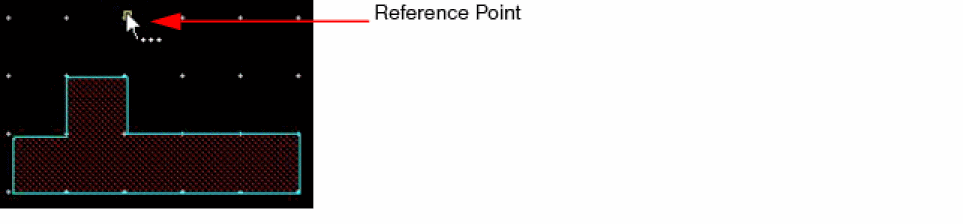
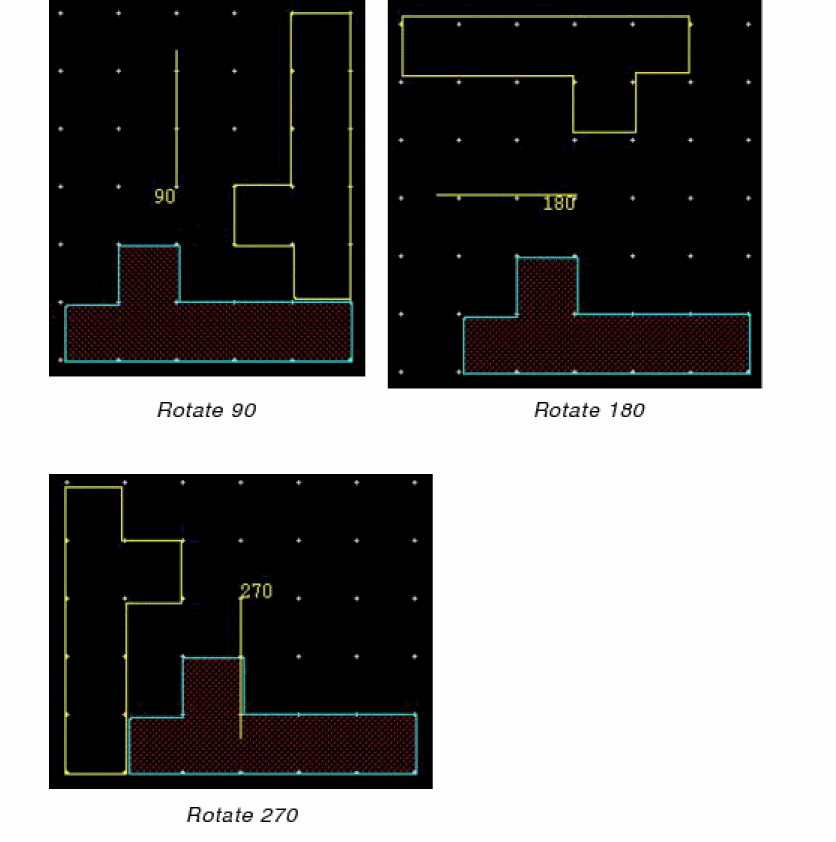

Rotating a Geometric Object by Any Angle
To rotate an object by specifying the rotation reference point on the canvas:
-
Choose Edit – Rotate – Rotate or click the Rotate icon
 on the Edit toolbar to invoke the Rotate command.
on the Edit toolbar to invoke the Rotate command.
Alternatively, right-click at any empty space on the canvas and select Rotate – Rotate from the shortcut menu. - Select the object on the canvas that you want to rotate.
-
Click at a reference point for rotation on the canvas.
 -
Click at a new point on the canvas to indicate the rotation angle as 90, 180, or 270 degrees.
Before you select the new point, a preview displays the rotation result and the angle of rotation as you move your mouse pointer. When you click on the canvas, the object is rotated and the command is exited.
The following figures illustrate how a selected object can be rotated at 90, 180, and 270 degrees.

Related Topics
Return to top